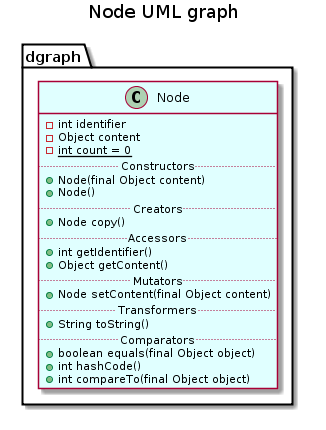

public class Node
extends java.lang.Object
implements java.lang.Comparable<java.lang.Object>
This class gives a standard representation for a node of a graph.
A node is composed of a content and an automatically computed and unique index.
This class implements the Comparable interface aiming at sorting nodes by providing the compareTo(java.lang.Object) method that compares the node with those in parameter by comparing their indexes.
Since nodes are comparable, they can be stored in a sorted collection, and in particular in a sorted set where set operations are provided.

Do we implement mutator for content?
| Constructor and Description |
|---|
Node()
Constructs a new node with a null content.
|
Node(Node node)
Constructs this node as a copy of the specified
node, with the same index. |
Node(java.lang.Object content)
Constructs a new node containing the specified content.
|
| Modifier and Type | Method and Description |
|---|---|
int |
compareTo(java.lang.Object object)
Compares this node with those in parameter, based on their identifiers.
|
Node |
copy()
Returns a copy of this node.
|
boolean |
equals(java.lang.Object object)
Compares this node with the specified one.
|
java.lang.Object |
getContent()
Get the content.
|
int |
getIdentifier()
Get the identifier.
|
int |
hashCode()
Compute the hash code.
|
java.lang.String |
toDot()
Returns the dot description of this node in a String.
|
java.lang.String |
toString()
Returns a string representation of this node without spaces.
|
public Node(java.lang.Object content)
Constructs a new node containing the specified content.
Identifier of this node is initalized with the count variable which is the incremented.
content - Content for this nodepublic Node()
Constructs a new node with a null content.
Identifier of this node is initalized with the count variable which is the incremented.
public Node(Node node)
Constructs this node as a copy of the specified node, with the same index.
node - the node to be copied
Is this constructor usefull since it breaks identifier unicity
public int getIdentifier()
Get the identifier.
public java.lang.Object getContent()
Get the content.
public java.lang.String toString()
Returns a string representation of this node without spaces.
toString in class java.lang.ObjectWhy do we need to remove spaces?
public java.lang.String toDot()
Returns the dot description of this node in a String.
public Node copy()
Returns a copy of this node.
public boolean equals(java.lang.Object object)
Compares this node with the specified one.
equals in class java.lang.Objectobject - The object to be tested withpublic int hashCode()
Compute the hash code.
hashCode in class java.lang.Objectpublic int compareTo(java.lang.Object object)
Compares this node with those in parameter, based on their identifiers.
The result is zero if the identifiers are equal; 1 if this node’s identifier is greater, and -1 otherwise. This comparison method is needed to define a natural ordering. It allows to use objects of this class in a sorted collection.
compareTo in interface java.lang.Comparable<java.lang.Object>object - the specified element to be compared with this node